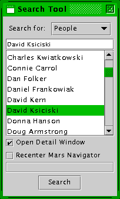

Mars Simulation Project
|
|  |
| Search Tool |
The Search Tool allows the user to select a person, settlement or vehicle and either open a unit info window for the unit and/or center the Mars Navigator map on the unit.
The user must select a category of units (person, settlement or vehicle) and select from the list of available units. A unit's name can be typed in the field above the list and the closest pick from that category will be selected on the list.
Please send questions or comments to mars-sim-users@lists.sourceforge.net
Mars Simulation Project copyright © Scott Davis, 2008
Map data courtesy of NASA Jet Propulsion Laboratory